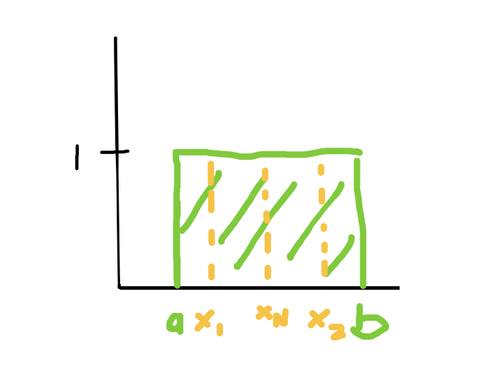

For each of the following problems, provide your answer and show the steps taken to solve the problem.
Problem 1. Maximum Likelihood Estimation (50 points) Given a dataset {x1, x2, …, xN } of size N, derive the maximum likelihood estimate (as a function of x1, …, xN ) for: (a) The lower and upper limits, a and b, of a uniform distribution,
f(x; a, b) = { \[\begin{array}{ll} \frac{1}{b-a}, & \text{if } a \leq x \leq b \\ 0, & \text{otherwise} \end{array}\](assuming each xi ∈ R). Show all of your work. (25 points)
to find the upper limit of a uniform distribution we have:
\[ b_{MLE} = argmax P_{b}(x_{1}, x_{2}, ... , x_{N}) \] \[ = argmax \prod_{i=1}^{N} \frac{1}{b-a} \]
\[ = argmax (\frac{1}{b-a})^N \]
From this expression we can see that the larger \(b\), the larger the maximum likelihood estimation. Therefore, we can conclude that $b = max(x_{i}) $
Similarly for the lower limit,
\[ a_{MLE} = argmax P_{a}(x_{1}, x_{2}, ... , x_{N}) \] \[ = argmax \prod_{i=1}^{N} \frac{1}{b-a} \]
\[ = argmax (\frac{1}{b-a})^N \]
The smaller \(a\) the larger the MLE, Therefore, we can conclude that \(a = min(x_{i})\)
To test this, we can draw the uniform distribution and some x values:

If some value of x was greater than b, the probability would be 0 and if some value of x was less than a, the probability would also be 0. Therefore to maximize the likelihood, we want all values of x to fall within the range \(a\) and \(b\).
- The λ parameter of a Poisson distribution,
\[ f(x; \lambda) = \begin{cases} \frac{e^{-\lambda} \lambda^x}{x!}, & \text{if } x \geq 0 \\ 0, & \text{if } x < 0 \end{cases} \]
(assuming each xi ≥ 0). Show all of your work. (25 points) Hints: (i) plotting some sample data may be helpful and calculus should not be required (a); (ii) maximizing the log likelihood provides the same parameter values and often provides a simpler path to a solution (b); (iii) log(ab) = log a + log b; (iv) log e a = a.
\[ l(\lambda | x) = p(x|\lambda) = \prod_{i=1}^N p(x_i|\lambda) = \prod_{i=1}^N e^{-\lambda}\frac{\lambda}{x!} \]
Then, take the log likelihood
\[ L(\lambda|x) = logl(\lambda|x) = \sum_{i=1}^N logp(x_i|\lambda) \] \[ = \sum_{i=1}^N loge^{-\lambda} \frac{\lambda^x}{x!}\] \[ = \sum_{i=1}^N loge^{-\lambda} + log\lambda^x - logx! \] \[ = -\lambda\sum_{i=1}^N + xlog\lambda - logx! \]
\[ MLE = \lambda^* = argmax_\lambda L(\lambda|x) \] \[ = -\lambda\sum_{i=1}^N + xlog\lambda - logx! \]
Problem 2. Bayesian Parameter Estimation (50 points) The density function of an exponential distribution is given by \(f_{\lambda}(x) = \lambda e^{-\lambda x}\). The MLE for the parameter λ can be calculated as \(\lambda = \frac{n}{\sum_ix_i}\). We will now consider Bayesian parameter estimation for this distribution.
- Using a prior distribution from the Gamma distribution, \(f_{\alpha, \beta}(\lambda) = \frac{\beta^{\alpha}\lambda^{\alpha-1}e^{-\lambda\beta}}{\Gamma(\alpha)}\), with parameters α and β, show that the posterior distribution for λ, after updating using three datapoints x1, x2, x3, is also a Gamma distribution and show its new parameter values, α0 and β0, in terms of α, β, x1, x2, and x3. (25 points)
\[p(x_1, x_2, x_3 \mid \lambda) = \lambda^3 e^{-\lambda(x_1 + x_2 + x_3)}\]
\[ p(\lambda \mid x_1, x_2, x_3) \propto p(x_1, x_2, x_3 \mid \lambda) \cdot p(\lambda) \]
substituting the prior and likelihood functions we get:
\[ p(\lambda \mid x_1, x_2, x_3) \propto \frac{\beta^{\alpha}}{\Gamma(\alpha)} \lambda^{\alpha-1} e^{-\lambda\beta} \cdot \lambda^3 e^{-\lambda(x_1 + x_2 + x_3)}\]
which simplifies to :
\[ p(\lambda \mid x_1, x_2, x_3) \propto \frac{\beta^{\alpha}}{\Gamma(\alpha)} \lambda^{\alpha+2-1} e^{-\lambda(\beta + x_1 + x_2 + x_3)} \]
and we get the parameter values as: \[ \alpha_0 = \alpha + 2 \] \[ \beta_0 = \beta + x_1 + x_2 + x_3 \]
- If our prior parameters are α = 2 and β = 1, and our data sample consists of x1 = 3.7, x2 = 4.5, x3 = 4.8: Compute the posterior probability of a new datapoint x4 = 3.8 under the fully Bayesian estimation of λ. You can either leave your answer in terms of the Gamma function, or provide the exact answer. (13 points) Hints: (i) You shouldn’t have to solve the complicated integral; (ii) Since the Gamma distribution normalizes to 1, R λ λ α−1 e −λβdλ = Γ(α) βα ; (iii) The Gamma function is related to the factorial function as Γ(x) = (x − 1)! for positive integers x.
\[ \alpha_0 = 2 + 2 = 4 \] \[ \beta_0 = 1 + 3.7 + 4.5 + 4.8 = 14 \]
To compute \(x_4\), plug \(\alpha_0\) \(\beta_0\) and \(x_4\) into the density function
\[ f(\lambda \mid \alpha_0, \beta_0) = \frac{\Gamma(\alpha_0)}{\beta_0^{\alpha_0}} \lambda^{\alpha_0 - 1} e^{-\beta_0 \lambda} \]
so we get:
\[ f(\lambda \mid 4, 14) = \frac{\Gamma(4)}{14^4} \cdot (3.8)^{4-1} e^{-14 \cdot 3.8} \]
- If we have the same prior and datapoints as in (b), what is the probability of a new datapoint x4 = 3.8 using maximum a posteriori estimation of λ? (12 points) Hint: (i) The mode of the Gamma distribution (i.e., the λ that attains its maximal probability) is α−1